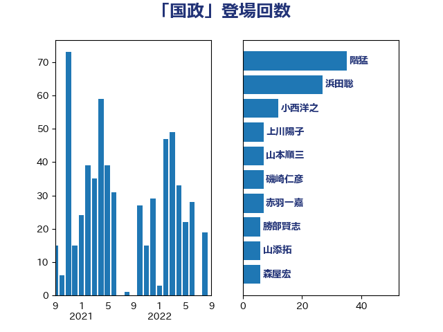

単語「国政」

| 階猛 | 立憲民主党 | 35 回 |
| 浜田聡 | NHK党 | 27 回 |
| 小西洋之 | 立憲民主党 | 12 回 |
| 上川陽子 | 自由民主党 | 7 回 |
| 山本順三 | 自由民主党 | 7 回 |
| 磯崎仁彦 | 自由民主党 | 7 回 |
| 赤羽一嘉 | 公明党 | 7 回 |
| 勝部賢志 | 立憲民主党 | 6 回 |
| 山添拓 | 日本共産党 | 6 回 |
| 森屋宏 | 自由民主党 | 6 回 |
| 若林健太 | 自由民主党 | 6 回 |
| 塩川鉄也 | 日本共産党 | 5 回 |
| 山田宏 | 自由民主党 | 5 回 |
| 浅田均 | 日本維新の会 | 5 回 |
| 越智隆雄 | 自由民主党 | 5 回 |
| 金田勝年 | 自由民主党 | 5 回 |
| 上月良祐 | 自由民主党 | 4 回 |
| 上田清司 | 国民民主党 | 4 回 |
| 上野賢一郎 | 自由民主党 | 4 回 |
| 佐藤信秋 | 自由民主党 | 4 回 |
| 古屋範子 | 公明党 | 4 回 |
| 吉田忠智 | 立憲民主党 | 4 回 |
| 太田房江 | 自由民主党 | 4 回 |
| 山本香苗 | 公明党 | 4 回 |
| 平木大作 | 公明党 | 4 回 |
| 木原誠二 | 自由民主党 | 4 回 |
| 梅村聡 | 日本維新の会 | 4 回 |
| 海江田万里 | 立憲民主党 | 4 回 |
| 矢倉克夫 | 公明党 | 4 回 |
| 石橋通宏 | 立憲民主党 | 4 回 |
| 義家弘介 | 自由民主党 | 4 回 |
| 菅義偉 | 自由民主党 | 4 回 |
| 赤嶺政賢 | 日本共産党 | 4 回 |
| 足立康史 | 日本維新の会 | 4 回 |
| 野村哲郎 | 自由民主党 | 4 回 |
| 長峯誠 | 自由民主党 | 4 回 |
| 長浜博行 | 無所属 | 4 回 |
| 麻生太郎 | 自由民主党 | 4 回 |
| 山口俊一 | 自由民主党 | 3 回 |
| 徳永エリ | 立憲民主党 | 3 回 |
| 斎藤嘉隆 | 立憲民主党 | 3 回 |
| 有村治子 | 自由民主党 | 3 回 |
| 松村祥史 | 自由民主党 | 3 回 |
| 根本匠 | 自由民主党 | 3 回 |
| 森本真治 | 立憲民主党 | 3 回 |
| 石垣のりこ | 立憲民主党 | 3 回 |
| 福山哲郎 | 立憲民主党 | 3 回 |
| 福重隆浩 | 公明党 | 3 回 |
| 細田博之 | 自由民主党 | 3 回 |
| 豊田俊郎 | 自由民主党 | 3 回 |
| 野田国義 | 立憲民主党 | 3 回 |
| 長谷川岳 | 自由民主党 | 3 回 |
| 馬場成志 | 自由民主党 | 3 回 |
| 高木かおり | 日本維新の会 | 3 回 |
| あかま二郎 | 自由民主党 | 2 回 |
| あべ俊子 | 自由民主党 | 2 回 |
| 中西祐介 | 自由民主党 | 2 回 |
| 井野俊郎 | 自由民主党 | 2 回 |
| 伊藤孝江 | 公明党 | 2 回 |
| 倉林明子 | 日本共産党 | 2 回 |
| 大串博志 | 立憲民主党 | 2 回 |
| 大塚耕平 | 国民民主党 | 2 回 |
| 奥野総一郎 | 立憲民主党 | 2 回 |
| 小川淳也 | 立憲民主党 | 2 回 |
| 尾辻秀久 | 無所属 | 2 回 |
| 山田賢司 | 自由民主党 | 2 回 |
| 平林晃 | 公明党 | 2 回 |
| 新妻秀規 | 公明党 | 2 回 |
| 柳ヶ瀬裕文 | 日本維新の会 | 2 回 |
| 浜地雅一 | 公明党 | 2 回 |
| 浜田靖一 | 自由民主党 | 2 回 |
| 牧山ひろえ | 立憲民主党 | 2 回 |
| 田名部匡代 | 立憲民主党 | 2 回 |
| 石原宏高 | 自由民主党 | 2 回 |
| 篠原孝 | 立憲民主党 | 2 回 |
| 米山隆一 | 立憲民主党 | 2 回 |
| 若宮健嗣 | 自由民主党 | 2 回 |
| 薗浦健太郎 | 自由民主党 | 2 回 |
| 赤澤亮正 | 自由民主党 | 2 回 |
| 酒井庸行 | 自由民主党 | 2 回 |
| 高橋克法 | 自由民主党 | 2 回 |
| 高鳥修一 | 自由民主党 | 2 回 |
| 一谷勇一郎 | 日本維新の会 | 1 回 |
| 中司宏 | 日本維新の会 | 1 回 |
| 中根一幸 | 自由民主党 | 1 回 |
| 今村雅弘 | 自由民主党 | 1 回 |
| 伊波洋一 | 無所属 | 1 回 |
| 伊藤孝恵 | 国民民主党 | 1 回 |
| 務台俊介 | 自由民主党 | 1 回 |
| 勝目康 | 自由民主党 | 1 回 |
| 北村経夫 | 自由民主党 | 1 回 |
| 北神圭朗 | 無所属 | 1 回 |
| 原口一博 | 立憲民主党 | 1 回 |
| 古川俊治 | 自由民主党 | 1 回 |
| 古川禎久 | 自由民主党 | 1 回 |
| 古賀之士 | 立憲民主党 | 1 回 |
| 古賀友一郎 | 自由民主党 | 1 回 |
| 吉川ゆうみ | 自由民主党 | 1 回 |
| 吉川沙織 | 立憲民主党 | 1 回 |
| 吉田宣弘 | 公明党 | 1 回 |
| 国光あやの | 自由民主党 | 1 回 |
| 坂本哲志 | 自由民主党 | 1 回 |
| 城内実 | 自由民主党 | 1 回 |
| 堀井巌 | 自由民主党 | 1 回 |
| 堀場幸子 | 日本維新の会 | 1 回 |
| 堂故茂 | 自由民主党 | 1 回 |
| 大塚拓 | 自由民主党 | 1 回 |
| 大家敏志 | 自由民主党 | 1 回 |
| 守島正 | 日本維新の会 | 1 回 |
| 宮崎政久 | 自由民主党 | 1 回 |
| 寺田学 | 立憲民主党 | 1 回 |
| 小沼巧 | 立憲民主党 | 1 回 |
| 小泉進次郎 | 自由民主党 | 1 回 |
| 山下芳生 | 日本共産党 | 1 回 |
| 山下雄平 | 自由民主党 | 1 回 |
| 岡本あき子 | 立憲民主党 | 1 回 |
| 岡田克也 | 立憲民主党 | 1 回 |
| 岩屋毅 | 自由民主党 | 1 回 |
| 川田龍平 | 立憲民主党 | 1 回 |
| 平口洋 | 自由民主党 | 1 回 |
| 後藤祐一 | 立憲民主党 | 1 回 |
| 志位和夫 | 日本共産党 | 1 回 |
| 打越さく良 | 立憲民主党 | 1 回 |
| 新垣邦男 | 立憲民主党 | 1 回 |
| 新藤義孝 | 自由民主党 | 1 回 |
| 杉尾秀哉 | 立憲民主党 | 1 回 |
| 東徹 | 日本維新の会 | 1 回 |
| 松下新平 | 自由民主党 | 1 回 |
| 梅村みずほ | 日本維新の会 | 1 回 |
| 橋本岳 | 自由民主党 | 1 回 |
| 櫻田義孝 | 自由民主党 | 1 回 |
| 江島潔 | 自由民主党 | 1 回 |
| 池下卓 | 日本維新の会 | 1 回 |
| 浜野喜史 | 国民民主党 | 1 回 |
| 渡辺猛之 | 自由民主党 | 1 回 |
| 熊谷裕人 | 立憲民主党 | 1 回 |
| 片山大介 | 日本維新の会 | 1 回 |
| 田村智子 | 日本共産党 | 1 回 |
| 石井正弘 | 自由民主党 | 1 回 |
| 石井準一 | 自由民主党 | 1 回 |
| 石原正敬 | 自由民主党 | 1 回 |
| 石川大我 | 立憲民主党 | 1 回 |
| 神谷裕 | 立憲民主党 | 1 回 |
| 福岡資麿 | 自由民主党 | 1 回 |
| 福島伸享 | 無所属 | 1 回 |
| 竹谷とし子 | 公明党 | 1 回 |
| 笠井亮 | 日本共産党 | 1 回 |
| 紙智子 | 日本共産党 | 1 回 |
| 緑川貴士 | 立憲民主党 | 1 回 |
| 自見はなこ | 自由民主党 | 1 回 |
| 若松謙維 | 公明党 | 1 回 |
| 落合貴之 | 立憲民主党 | 1 回 |
| 藤田文武 | 日本維新の会 | 1 回 |
| 西岡秀子 | 国民民主党 | 1 回 |
| 西田昌司 | 自由民主党 | 1 回 |
| 西野太亮 | 自由民主党 | 1 回 |
| 西銘恒三郎 | 自由民主党 | 1 回 |
| 谷川とむ | 自由民主党 | 1 回 |
| 逢沢一郎 | 自由民主党 | 1 回 |
| 進藤金日子 | 自由民主党 | 1 回 |
| 道下大樹 | 立憲民主党 | 1 回 |
| 遠藤良太 | 日本維新の会 | 1 回 |
| 野田佳彦 | 立憲民主党 | 1 回 |
| 野田聖子 | 自由民主党 | 1 回 |
| 金子恵美 | 立憲民主党 | 1 回 |
| 鈴木馨祐 | 自由民主党 | 1 回 |
| 関口昌一 | 自由民主党 | 1 回 |
| 関芳弘 | 自由民主党 | 1 回 |
| 青木愛 | 立憲民主党 | 1 回 |
| 馬場伸幸 | 日本維新の会 | 1 回 |
| 馬淵澄夫 | 立憲民主党 | 1 回 |
| 高良鉄美 | 無所属 | 1 回 |
| 高階恵美子 | 自由民主党 | 1 回 |